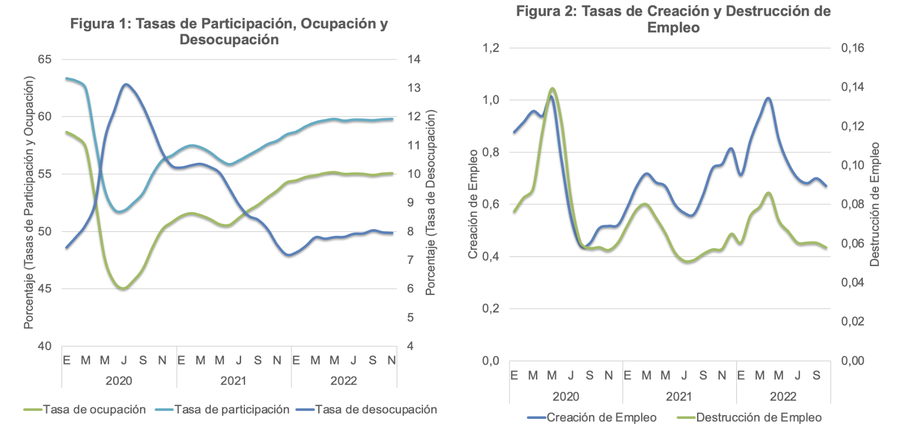

Situación del mercado laboral: Un balance del 2022
Publicado en la Revista Observatorio Económico de la Facultad de Economía y Negocios de la Universidad Alberto Hurtado
La actividad económica fue de más a menos durante 2022. En efecto, luego de mostrar tasas de crecimiento en doce meses sobre 10% durante los últimos meses de 2021, la economía chilena fue paulatinamente desacelerando su ritmo de crecimiento desde un 7,4% en el primer trimestre hasta un 0,3% en el tercero. Según los datos del Índice Mensual de Actividad Económica (IMACEC), los últimos 3 meses de los que se tiene registro, esto es septiembre a noviembre, la economía se habría contraído y el peor registro fue el del último mes, un 2,5%. Técnicamente aún no entramos en recesión1, no obstante todo indica que si lo haríamos el primer trimestre del año que empieza. De acuerdo a las predicciones presentadas por el Banco Central en su último Informe de Política Monetaria (IPOM), el crecimiento de la economía podría situarse en un rango de -1.75 y 0,75% con una aceleración del crecimiento hacia el final del año. Así, las perspectivas no son las mejores para este 2023.
El mercado laboral no estuvo ajeno al comportamiento de la economía. Como se observa en la figura 1, el envión económico de la segunda mitad de 2021 y principios de 2022, resultado de la apertura completa luego de la pandemia del COVID19, generó una recuperación importante de las tasas de participación y de empleo (en casi 5 puntos porcentuales en ambos casos). A pesar de esto, ambas tasas se estancaron hacia mediados del año y quedaron hacia el final del mismo en niveles aún por debajo de los observados antes de la pandemia (en aproximadamente 3.5 puntos porcentuales). Cabe señalar además, que a diferencia del año 2021 donde el empleo creció más rápido que la fuerza laboral, y por tanto la creación de empleo era más que suficiente para acomodar a desempleados y nuevos participantes en el mercado, a principios de 2022 fue la fuerza laboral la que creció con mayor rapidez. Como resultado, la tasa de desempleo se empinó desde 7,2% en diciembre de 2021 (el nivel más bajo del post pandemia) a 7,9 en el último registro de noviembre de 2022. A lo anterior también aportó que durante 2021 y los primeros meses de 2022 la creación de empleo aumentó mucho más rápido de lo que lo hizo la destrucción de empleo (ver figura 2). Por el contrario, si bien a partir de mayo 2022 ambas tasas, de creación y destrucción de empleo, tendieron a disminuir, la primera lo hizo de forma más pronunciada.
Estos datos indican que la capacidad de crear empleo se ha debilitado considerablemente, lo que es consistente con el momento que está viviendo la economía chilena. Es interesante analizar además las fuentes de crecimiento del empleo (ver figura 3). El fuerte crecimiento (en doce meses) del empleo durante la segunda mitad del año 2021 estuvo impulsado tanto por el crecimiento del empleo formal total como por el del empleo informal por cuenta propia (con aportes promedio de 45 y 43%, respectivamente). El aporte del empleo informal asalariado, en tanto, fue también positivo pero estuvo claramente por detrás de los dos anteriores (en promedio 12%). En 2022 la composición del crecimiento del empleo cambió. Tres aspectos de dicho cambio son interesantes de destacar. Primero, el empleo informal por cuenta propia mostró una reducción importante en su ritmo de crecimiento y sólo aportó un 13% al crecimiento del empleo total. Segundo, si bien el empleo formal total también redujo su ritmo de crecimiento, a casi la mitad medido en puntos porcentuales, éste pasó a ser el componente más importante del crecimiento del empleo en 2022, con un aporte promedio superior al 70%. Finalmente, el empleo asalariado informal mantuvo su aporte en alrededor de un punto porcentual, lo cual lo puso en un segundo lugar con un 16% de participación en el crecimiento del empleo total. En el margen el empleo total está estancado (el crecimiento mensual en los últimos dos meses ha sido solo 0,2% en promedio), lo que refleja un estancamiento también del empleo formal (0,1%) y una caída en el empleo informal por cuenta propia (-1,4%). El único tipo de empleo que creció en el margen fue el asalariado informal (3% en promedio en los últimos dos registros de 2022). Lo descrito antes muestra no solo que el empleo se desaceleró de forma importante (siendo el empleo formal el principal factor), sino también que el cuentapropismo informal era un componente importante de la recuperación en 2021 y que el empleo asalariado informal está tomando protagonismo en 2022. Ambos elementos dan cuenta no solo de un deterioro en el empleo per se sino que también en su calidad.
Detrás del deterioro del empleo formal está el claro debilitamiento de la demanda por trabajo. En efecto, las vacantes de trabajo, publicadas tanto en los medios de prensa escritos como por internet, se deterioraron de forma consistente desde finales de 2021. Según los datos publicados por el Banco Central, los índices de vacantes en medios de prensa escrita y por internet cayeron en algo más de 35 y 40% en los últimos 12 meses, respectivamente, y la tendencia a lo largo del año ha sido clara (ver figura 4). En el margen pareciera existir cierto repunte, no obstante la volatilidad propia de estos índices no permite realizar afirmaciones más certeras. Otro aspecto de preocupación en 2022 ha sido el deterioro del poder de compra de los salarios. Con la aceleración de la inflación desde mediados de 2021, el impacto negativo en los salarios reales (de los aumentos en precios) ha ido siendo más notorio en la medida que el crecimiento de los salarios nominales no ha sido capaz de compensar las subidas en los precios, hecho que se hizo evidente desde finales de ese mismo año (ver figura 5). En 2022 el poder de compra, medido por el salario real, ha caído en doce meses durante todos los meses y lo ha hecho en promedio -1,8% (esto pese a que los salarios nominales han crecido sobre 10%). En los últimos dos meses las caídas han sido algo más contenidas producto de una ligera menor tasa de inflación, no obstante mientras la subida en el nivel general de precios más allá del objetivo meta del Banco Central no termine de ceder, es de esperar nuevos deterioros del poder adquisitivo. Según el último Informe de Política Monetaria (IPOM) la trayectoria de la inflación debiera ya ser decreciente y probablemente alcanzaríamos el límite superior del rango meta del Banco Central (entre 2 y 4%) hacia finales de 2023.
En suma, es probable que la economía chilena entre en recesión durante los primeros meses de 2023 y debería repuntar hacia finales de ese año. Consistente con esto, el mercado laboral debería seguir deteriorándose, en cantidad y calidad. Así, la tasa de desempleo podría empinarse hasta niveles cercanos a 9-10% hacia mediados de 2023 para luego empezar a retroceder. La informalidad laboral también debiera tomar mayor protagonismo. Finalmente, mientras la tasa de inflación se mantenga en niveles altos, que ocurrirá con alta probabilidad durante el primer semestre del año, veríamos nuevas caídas en los salarios reales, no obstante éstas debieran ser más contenidas que lo observado en 2022 (esto es, por debajo de 1-1,5%).

Footnotes
De acuerdo a la definición práctica usada por la Oficina Nacional de Investigación Económica (NBER por sus siglas en inglés) de los Estados Unidos, una economía entra en recesión si muestra tasas de crecimiento negativas por dos trimestres consecutivos.↩︎